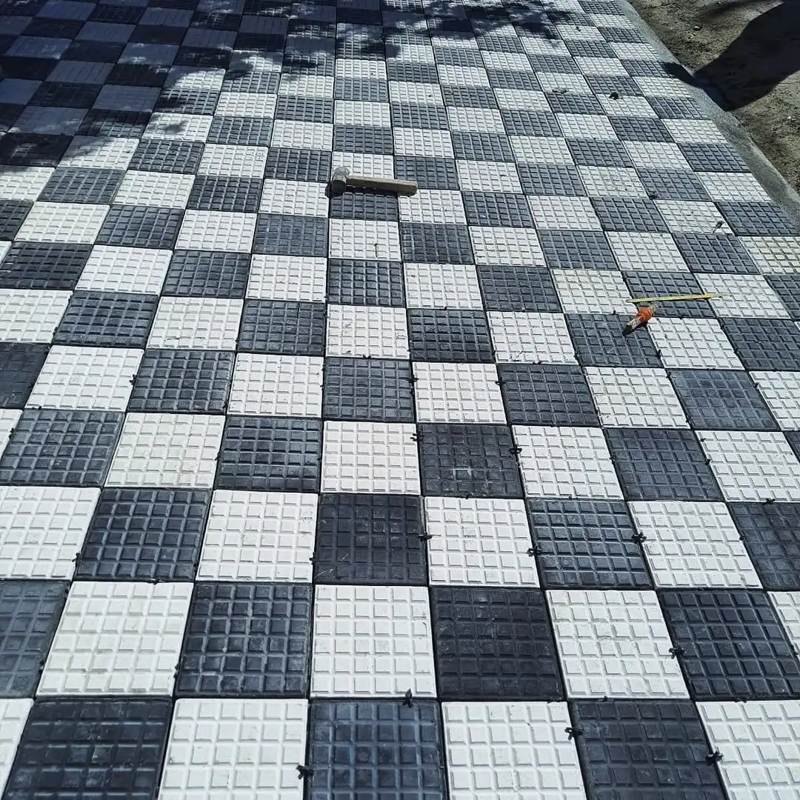
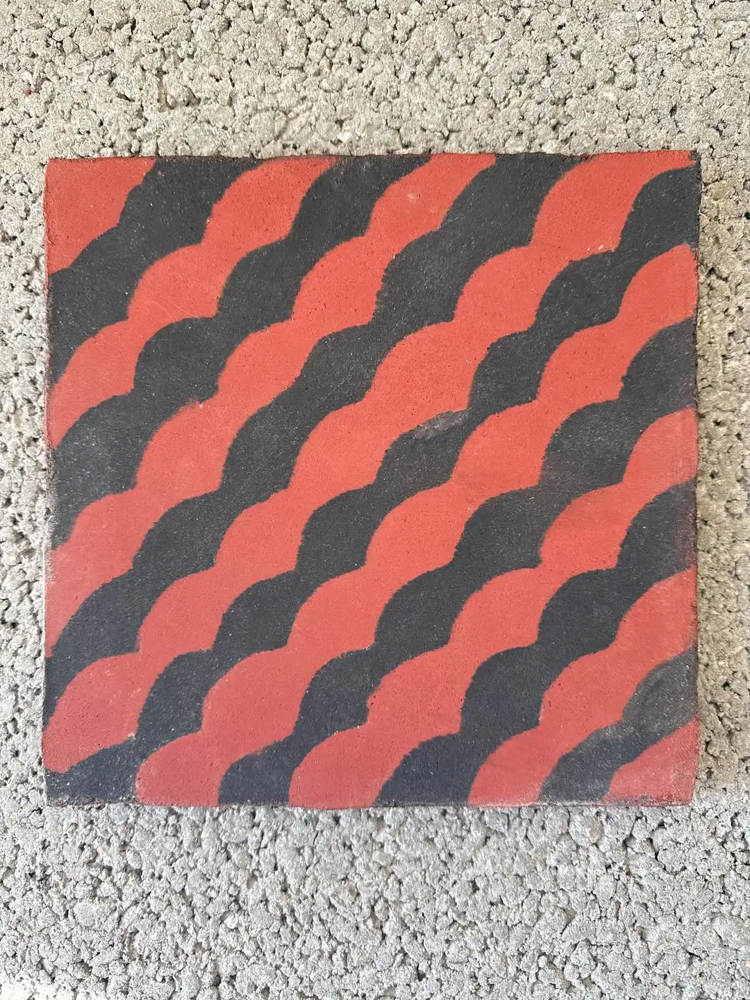
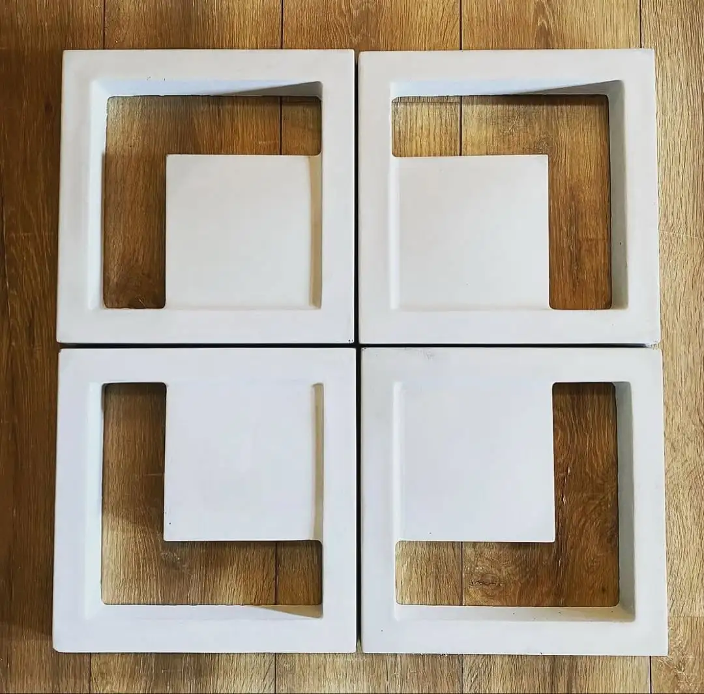

Ladrilho hidráulico
Peças artesanais para pisos e paredes. Indicado para áreas internas e externas cobertas, conforme especificação do projeto e selagem adequada.
Solicitar orçamentoLadrilhos hidráulicos artesanais, cobogós e linha de pisos em cimento — com fotos reais da nossa produção.

Peças artesanais para pisos e paredes. Indicado para áreas internas e externas cobertas, conforme especificação do projeto e selagem adequada.
Solicitar orçamento
Padrão geométrico clássico com forte presença visual — ideal para salas, cozinhas e áreas de convivência.
Solicitar orçamento
Padrão em onda no formato 20×20 cm — forte identidade visual para pisos e áreas sociais.
Solicitar orçamento
Desenvolvimento de desenho e paleta alinhados ao seu projeto, mantendo o processo artesanal e a resistência do cimento.
Solicitar orçamento
Elementos vazados para ventilação, luz natural e composições de fachada ou divisórias internas.
Solicitar orçamento
Peça maciça de cimento para apoio estrutural, bases e aplicações que exigem massa e estabilidade.
Solicitar orçamentoSoluções em cimento para circulação externa, calçadas e projetos com exigências de acessibilidade (alerta e direcional). Consulte modelos disponíveis e prazos com a equipe.
Solicitar orçamentoNa Incoart você encontra tinta de demarcação viária com alta cobertura, secagem rápida e resistência ao tempo e ao tráfego — ideal para pátios, estacionamentos, calçadas, fábricas e áreas externas, com sinalização nítida e mais segurança.
Cores disponíveis: a paleta completa aparece na publicação abaixo (mesma imagem do Instagram). Para orientações sobre aplicação e uso da tinta, veja também esta publicação sobre tinta e aplicação.